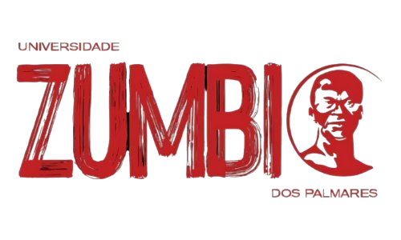

Processo estruturado que acompanha organizações do diagnóstico à implementação, com soluções desenhadas sob medida e certificação emitida pela Universidade Zumbi dos Palmares.
Fale ConoscoUm processo estruturado de consultoria e certificação em diversidade, equidade, inclusão e gestão de conflitos. A empresa é acompanhada do diagnóstico à implementação, com soluções desenhadas sob medida para sua realidade, e, ao final do processo, recebe o certificado emitido pela Universidade Zumbi dos Palmares.
O certificado é emitido pela Universidade Zumbi dos Palmares, maior instituição brasileira dedicada à formação acadêmica e à produção de conhecimento sobre igualdade racial. A consultoria técnica e metodológica é conduzida pela Faleck & Associados, primeiro escritório brasileiro especializado em prevenção e resolução consensual de conflitos, com mais de 100 mediadores formados segundo os protocolos da Escola de Harvard.
Mapeamento de maturidade DEI com identificação de riscos (inclusive raciais) e oportunidades.
Passe o mouse para saber maisDocumento executivo com mapeamento do nível de maturidade DEI da organização, identificação de riscos sociais, raciais e reputacionais, oportunidades e recomendações priorizadas por impacto.
Prevenção ao racismo, assédio e comportamentos inadequados.
Passe o mouse para saber maisSugestões de políticas e guias completos para todos os atores do sistema: prevenção ao racismo, assédio, comportamentos inadequados e maior entendimento e acesso dos canais da empresa.
Canais estruturados e integrados de prevenção, resolução de disputas e situações inadequadas.
Passe o mouse para saber maisEstruturação e integração de diferentes canais de prevenção e resolução de disputas (ouvidoria, canal de denúncias, canais com mecanismos baseados em interesses) com fluxos de acolhimento sensíveis a questões raciais e de gênero e procedimentos que visam à prevenção e desescalada de conflitos.
Letramento racial, RH antirracista, DEI, mediação e técnicas de comunicação.
Passe o mouse para saber maisProgramas segmentados para lideranças e equipes: letramento racial, prevenção ao assédio, comunicação e mediação de conflitos.
Assistente digital para colaboradores tirarem dúvidas sobre políticas, diretrizes e melhores práticas.
Passe o mouse para saber maisAssistente digital disponível 24h para colaboradores em canais e conversas difíceis, com suporte em temas sensíveis com segurança e limites claros.
Emitido pela Universidade Zumbi dos Palmares.
Passe o mouse para saber maisEmitido pela Universidade Zumbi dos Palmares, com validade institucional para uso em relatórios ESG e comunicação de marca empregadora.
Assistente digital que dissemina práticas, políticas e canais da empresa, auxiliando colaboradores em temas de convivência, prevenção e gerenciamento de conflitos.
Assistente Antirracista
Disponível 24h para colaboradores
Vantagens concretas para empresas que buscam genuinamente transformar sua cultura organizacional.
Adequação às normativas nacionais e internacionais de prevenção ao assédio e discriminação.
Reconhecimento como empresa comprometida com diversidade, equidade e inclusão.
Canais e processos estruturados para prevenção e resolução de conflitos e assédio.
Certificado pela Universidade Zumbi dos Palmares.
Cada empresa passa por um processo estruturado, garantindo diagnóstico preciso, construção sob medida e implementação acompanhada.
Entrevistas e análise documental sobre políticas, canais e percepção dos colaboradores.
Proposta de políticas e canais sob medida, baseada em melhores práticas nacionais e internacionais.
Treinamento de mediadores internos, disseminadores e acompanhamento das primeiras mediações.
Coleta sistemática de dados, visitas periódicas e aprendizado contínuo para manutenção.
A certificação se apoia em três pilares técnicos que orientam o diagnóstico, a construção das soluções e o acompanhamento da implementação:
Análise documental de políticas, códigos de conduta, canais de denúncia e indicadores de clima organizacional, complementada por entrevistas estruturadas com lideranças e amostras representativas do corpo funcional. O diagnóstico produz um relatório com mapeamento de riscos, lacunas e recomendações priorizadas, considerando o setor de atuação e o estágio atual da organização.
A partir do diagnóstico, nossa equipe desenvolve, em conjunto com a empresa, políticas, diretrizes e um sistema integrado de canais de prevenção e resolução de disputas (Dispute Systems Design — DSD). Cada solução é construída sob medida, considerando porte, setor, cultura organizacional, marco regulatório aplicável e maturidade institucional.
Acompanhamento técnico na implementação das políticas e canais, com capacitação de profissionais da própria organização em mediação, comunicação e letramento racial. A formação segue as metodologias da Harvard Negotiation Project — referência mundial em resolução de conflitos desde 1979 — e inclui supervisão das primeiras mediações conduzidas internamente.
A certificação reconhece quatro níveis de maturidade — Compromisso, Transformação, Liderança e Legado — com critérios progressivos e objetivos. Essa estrutura permite que organizações em diferentes estágios iniciem o processo e evoluam de forma documentada, com recertificações periódicas que acompanham o amadurecimento institucional.
Passe o mouse sobre cada categoria para conhecer os requisitos completos.
A Certificação Zumbi dos Palmares é uma iniciativa da Universidade Zumbi dos Palmares, com apoio técnico e metodológico da Faleck & Associados.

Instituições de referência nacional na promoção da igualdade racial, na produção de conhecimento aplicado à temática antirracista e no desenvolvimento de políticas, programas e iniciativas de combate à discriminação.
Destacam-se pela atuação acadêmica, comunitária e institucional voltada à inclusão, diversidade, justiça social e enfrentamento das desigualdades étnico-raciais no Brasil.
Visitar site →Preencha o formulário e entraremos em contato em até 48 horas úteis.